02 YOLOv1
YOLO v1
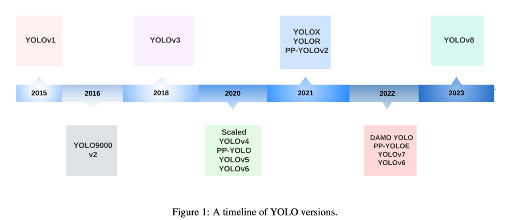
YOLO这种单阶段目标检测通过模型的一次计算就能解决2个问题：
- object 的bbox的位置、大小信息
- bbox所对应的类别信息
1.测试阶段的具体流程
1.1图像的预处理
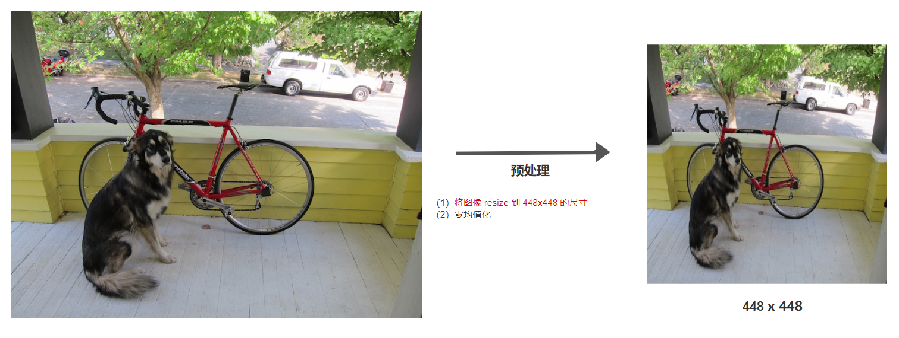
由于YOLO v1的网络中有全连接层，因此需要把输入图片resize至固定大小
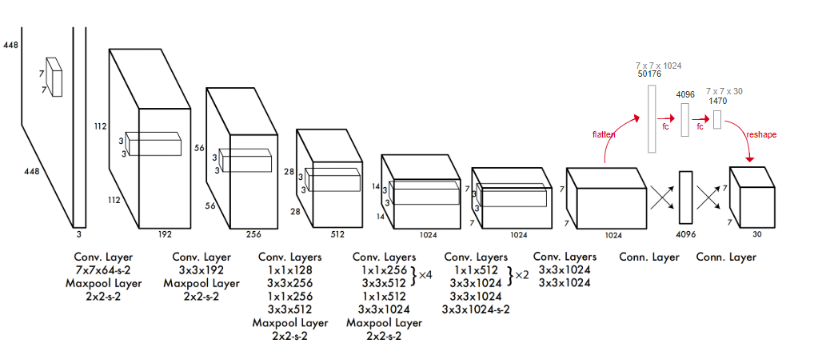
1.2模型的输出向量
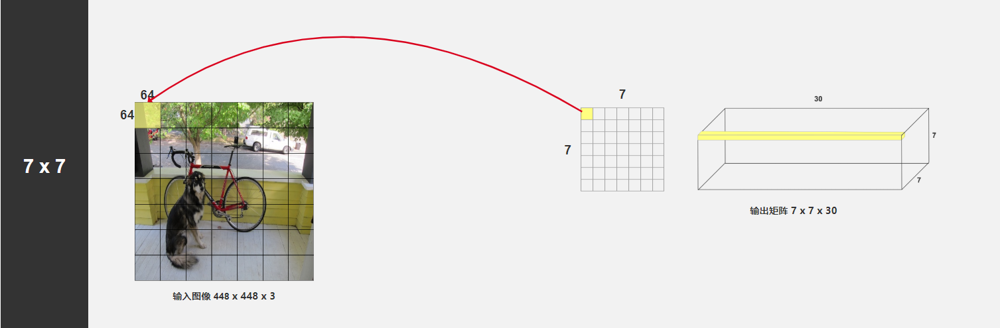
由上图可知，YOLO v1模型的输出是一个7x7x30的张量（49个30维向量）
7x7代表输出特征图的大小，YOLO v1模型实际上是把原图分成了若干grid cell（网格），原图上每一个网格大小为64x64个像素，对应于最终输出特征图上的一个像素。这样的话最终输出特征图上每一个像素都能感受到原图上很大一个区域。
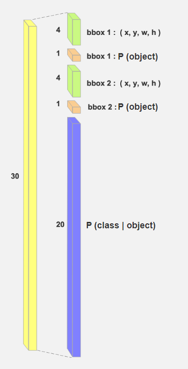
输出特征图的每个像素都会生成2个
bbox，再加上所使用的VOC数据集的20个类别，就构成了30这个维度。
- 其中P(object)代表这个gird中含有物体的概率，也就是置信度。
对于这30维度的向量，有一下几点需要注意：
(1)w,h,x,y的范围都是(0~1)，他们的取值都是相对于对应网格的占比。比如bbox的尺寸为(0.5,0.5,0.5,0.5)，那么,它在原图中的宽、高为448 * 0.5。x,y都是对应网格左上角的坐标+64 * 0.5
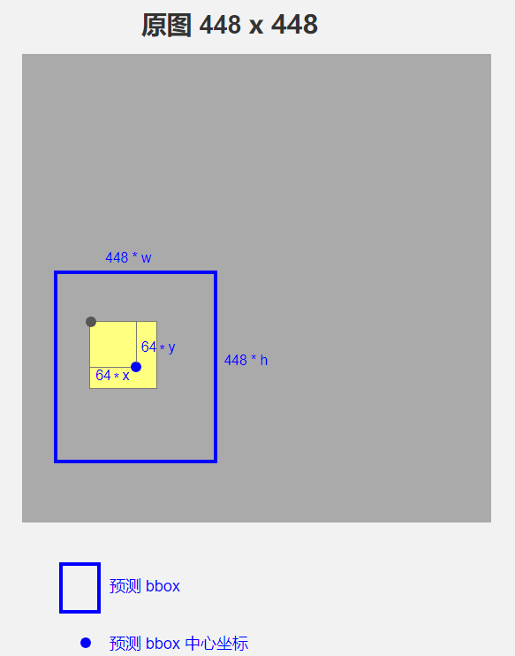
(2)每个网格会生成2个预测的bbox(上例中共7x7x2=98个bbox)，这2个bbox共用同一套条件类别概率
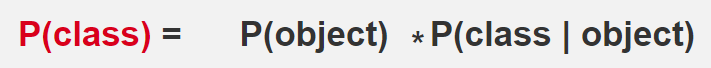
(3)gt bbox的中心点落在那个网格中，那么该网格就负责生成bbox预测该物体
1.3筛选生成的bbox
筛选bbox这个步骤只有在预测时需要，在训练时不需要
对于所生成的全部98个bbox，需要经过3轮筛选得到最终的预测结果
(1)筛选出P(object)大于threshold1的boxes：contain_index, contain_prob
(2)遍历上边的boxes，找到每个box中最大概率的类别: class_index, class_prob
计算probs=contain_prob*class_prob
if probs>threshold2:
记录bbox的坐标、class_index、probs
(3)NMS，剔除重叠率大的bbox
2.训练阶段具体流程
2.1输入预处理
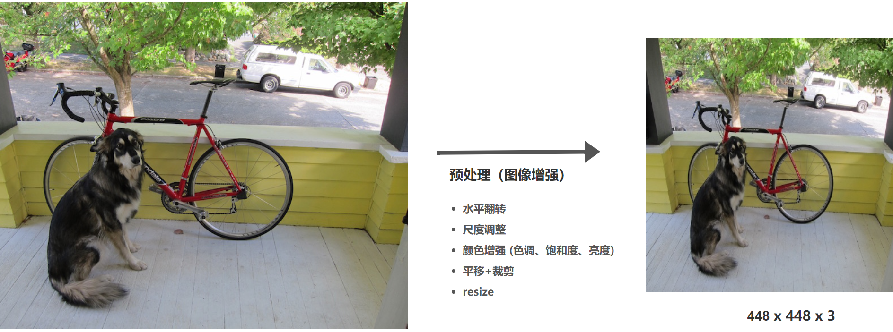
由于对图像大小进行了
resize，因此对于其标签也需要进行resize
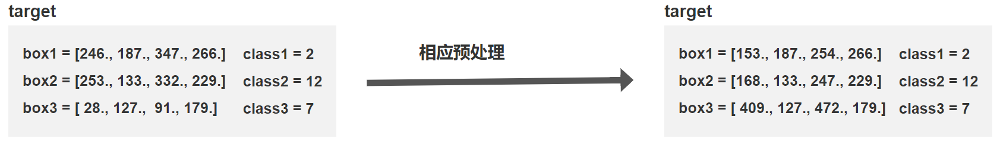
标签中bbox通常为(xmin,ymin,xmax,ymax)，因此读取时需要转换成(x,y,w,h)形式
2.2制作训练用的标签
假设，一批图像数据的维度是 [B,3,H,W] ，分别是batch size，色彩通道数，图像的高和图像的宽。标签数据是一个包含 B 个图像的标注数据的python的list变量，其中，每个图像的标注数据的list变量又包含了 M 个目标的信息（类别和边界框）。获得了这一批数据后，图片是可以直接喂到网络里去训练的，但是标签不可以，准确地说，是不合适、不方便，我们需要将其处理一下。
这里应该是整个YOLO模型中最难的地方了
由于网络的输出是个7x7x30的张量，所以训练时，我们也许要提供一个张量来进行损失的计算
1 | def generate_txtytwth(gt_label, w, h, s): |
首先，我们准备一个变量gt_tensor ，这个变量的空间维度和我们网络输出的tensor的空间维度是一样的，也就相当于我们准备好了一个网格，然后再合适的网格位置去保存标签信息，相当于在告诉网络：这个网格有目标，那个网格没有目标。而最后一个维度：1+1+4+1，分别是置信度（1）、类别标签（1）、边界框（4）、边界框回归权重（1）。
那么，对于输入进来的一批数据的标签，我们使用for循环依次去遍历这一批数据中的每个样本的标签，由于每张图像可能会包含 M 个目标，因此再使用一个for循环去遍历当前标签数据中的每一个边界框数据，即代码中的变量gt_label。
对于每一个变量gt_label，我们调用上面代码中的第一个函数：generate_txtytwth去计算正样本所需要的数据，包括类别标签和回归边界框需要的 txtytwth。
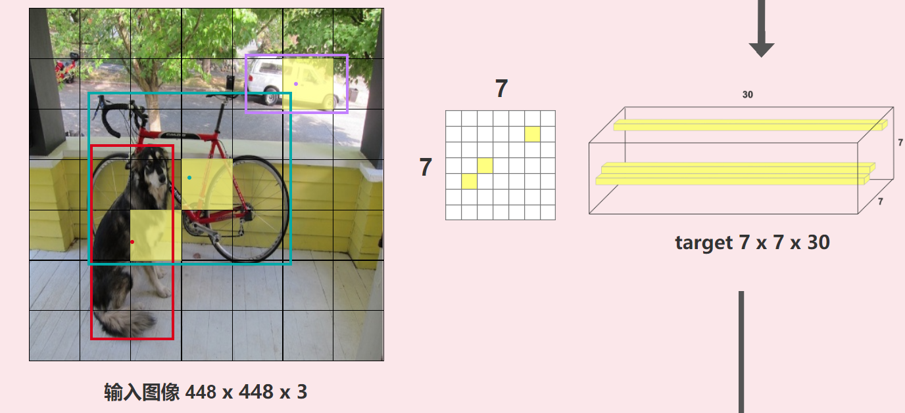
最后生成的gt_tensor张量如右图所示，假设它的维度是[H,W,C]，也就是有H*W个grid。只有==正样本==所在的grid上有数据，其他全为0。
简单理解，YOLOv1的正样本就是有gt_box落在他身上的grid
2.3损失函数
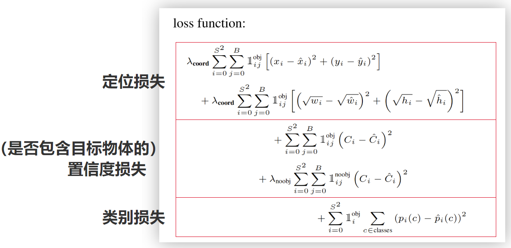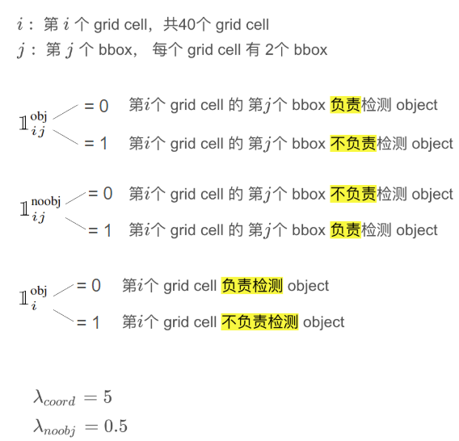
损失函数包括3部分，如上图所示。那些符号定义非常重要，带入我们可以得知
- ==label中包含物体的网格的计算：定位损失+置信度损失+类别损失==
- ==label中不包含物体的网格计算：置信度损失==
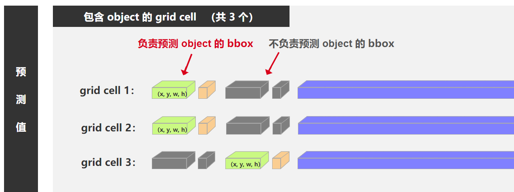
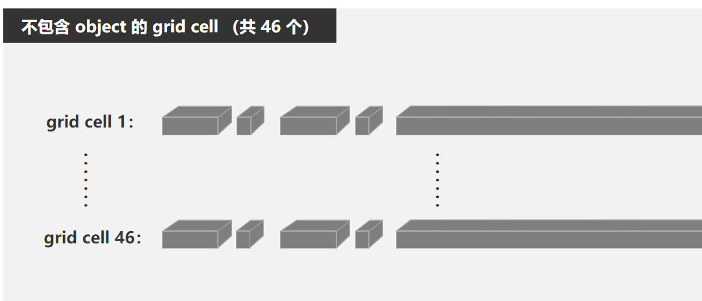
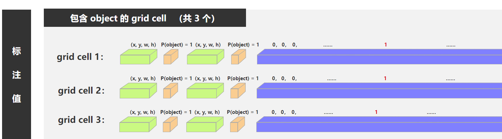

2.4针对损失函数的个人理解
对于YOLOv1的这个损失函数，以及它到底是如何训练的能做到使得每个grid产生理想的输出这个问题，一开始我是不能理解的，但仔细思考后还是可以理清楚的：
针对三个不同的任务，可以把YOLO的每个子任务看成一个单输入，多输出的模型，模型最后输出的那个特征图的每个grid都可以看成是一个输出。所以对于每个子任务都有14x14=196个输出。
YOLO损失函数的特点是：它没有用全部的输出计算损失函数，而只是用了一部分，这点很重要，如果用了全部的输出计算损失，那么L=f(y1,y2…y196)，在梯度下降计算L关于某个参数w的偏导时，首先需要计算L关于196个输出的偏导，接着再通过链式法则求L关于w的偏导。而在某些子任务中，部分样本的输出并不重要(比如conf很低的grid输出的bbox的坐标)，我们不应该用这些样本来更新权重，因此在定义损失函数L时，不用把这个输出加进来，这样L就不是这个输出的函数了，其求梯度时也不需要对这个y求偏导，进一步来说他更新权重时就不会更新输出这个y的那些参数w。